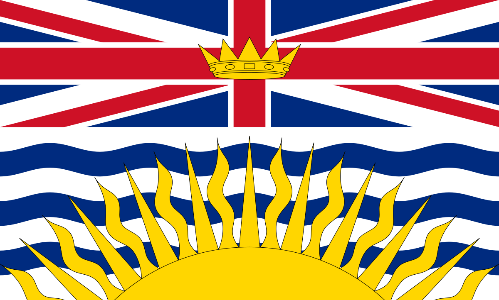
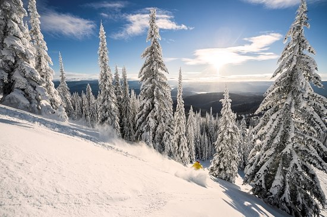
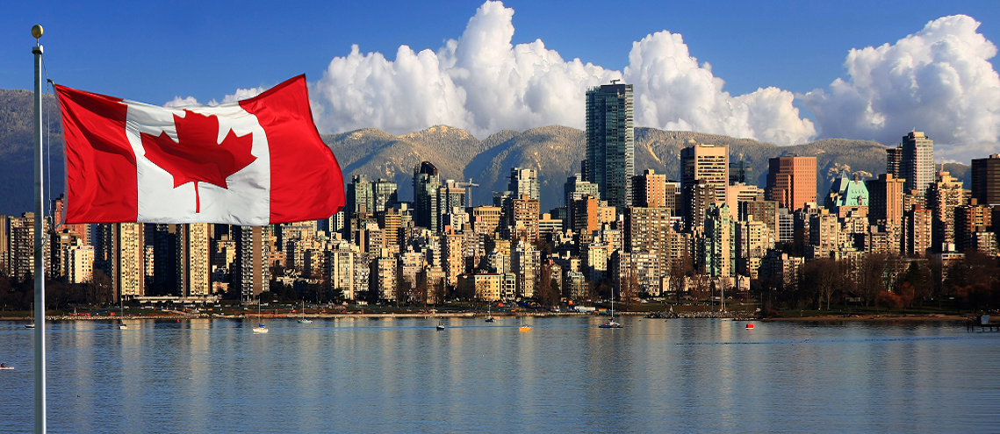

British Columbia has over 4.631 million in population. The capital of British Columbia is Victoria. Also, half of British Columbians live in the area of metropolitan Vancouver. Just a fun fact British Columbia holds the record for the longest beard in the world. The highest point in British Columbia is 15,300 feet. Also, did you know that you know that 2/3 of Canadians speak French not Enligh. Next off, there are over 400 provical parks in British Columbia.
  
By click on the iframe you will be shown a website all about Canada and how it became what it has become now. This iframe will leead you to the offical websitte of British Columbia. Everything inside of the iframe is clickable. This link above with show you all about British Columbia. and, the detail that this website can't explain. In this iframe you will see what places you should vist if you are in British Columbia. British Columbia has many point of interests such as, Capilano Suspension Bridge, Butchart Gardens, Whistler Blackcomb, Grouse Mountain, Alaska Highway, Pacific Rims and many more others.
Click the video above to estch a full three minutes video of Great Bear Rainforest and exploring British Columbia.
| Population | Worth | Popular Place |
|---|---|---|
| 4.604,371 million people (2015) | $7.0 trillion | Stanley Park |
| 4.767,471 million people (2016) | $8.4 trillion | Suspension Bridge |
| 5.112,461 million people (2017) | $9.4 trillion | Pacific Rims |